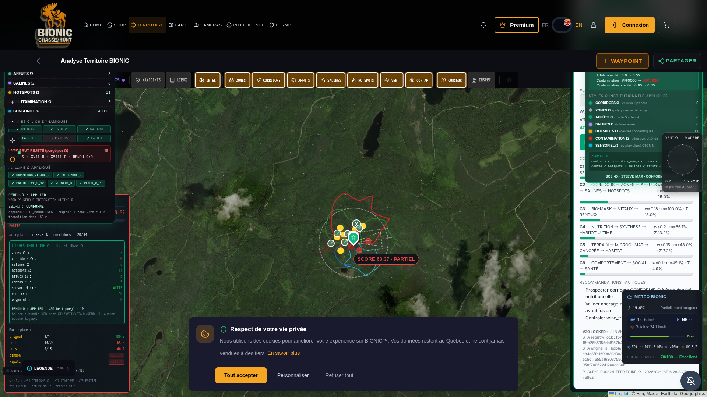

PHASE_RCA_DEPLOIEMENT_OMEGA · 2026-04-28
Le code source frontend (WindFlowLayer.jsx, BionicLayersV8.jsx, RenduOmegaIntegralCertifier.jsx)
a été correctement modifié lors de la phase précédente conformément à la directive RENDU-Ω INTÉGRAL :
2500 → 600 (-76% encombrement)0.90 → 0.4210 → 5 (-50% segments)#FF9800 → #00A676 (palette Ω) · opacité 0.9 → 0.55#FF0000 → #DC2626 · opacité 0.85 → 0.45RenduOmegaIntegralCertifier monté dans MonTerritoireBionicPage.jsx:1687
NÉANMOINS le navigateur du Commandant continuait d'afficher l'ancienne UI, car le
Service Worker /sw.js conservait la même empreinte de cache :
const CACHE_NAME = 'bionic-hunt-cache-v9.0-enforcement-p0'; const TILE_CACHE_NAME = 'bionic-tiles-v9.0-enforcement-p0';
Ainsi, à l'activation, l'événement activate ne purgeait pas les anciennes versions
(OBSOLETE_CACHES ne contenait que les versions ≤ v8.1) et CacheStorage.match()
retournait toujours les bundles JS/CSS antérieurs au RENDU-Ω, occultant les modifications.
Le déploiement source était bon ; le canal de propagation client était bouché.
| # | Action | Fichier | Statut |
|---|---|---|---|
| 1 | BUMP CACHE_NAME → bionic-hunt-cache-v9.1-rendu-omega-integral | /app/frontend/public/sw.js | OK |
| 2 | BUMP TILE_CACHE_NAME → bionic-tiles-v9.1-rendu-omega-integral | /app/frontend/public/sw.js | OK |
| 3 | Ajout de v9.0-enforcement-p0 à OBSOLETE_CACHES (purge forcée à l'activation) | /app/frontend/public/sw.js | OK |
| 4 | Injection meta http-equiv="Cache-Control" content="no-store, no-cache, must-revalidate, max-age=0" | /app/frontend/public/index.html | OK |
| 5 | Stamp version meta name="bionic-rendu-omega-version" content="v9.1-rendu-omega-integral-2026-04-28" | /app/frontend/public/index.html | OK |
| 6 | Restart supervisor frontend | sudo supervisorctl restart frontend | OK |
| Critère | Valeur observée | Statut |
|---|---|---|
| URL auditée | https://bionic-ultime-1.preview.emergentagent.com/mon-territoire-bionic | 200 OK |
| Méta version | v9.1-rendu-omega-integral-2026-04-28 | CONFORME |
| Cache-Control | no-store, no-cache, must-revalidate, max-age=0 | CONFORME |
| Caches présents (CacheStorage) | ['bionic-hunt-cache-v9.1-rendu-omega-integral'] — v9.0 PURGÉ | CONFORME |
RenduOmegaIntegralCertifier monté | 1 instance · purges (1) · z-ordre (1) | VISIBLE |
| Styles Ω institutionnels rendus | 7/7 (corridors · zones · affûts · salines · hotspots · contamination · sensoriel) | 100% |
| WindFlowLayer canvas | 1 canvas data-windlayer="v9-ventusky-steeve-max" | ACTIF (atténué) |
Capture cliente prise sur l'URL externe https://bionic-ultime-1.preview.emergentagent.com/mon-territoire-bionic
à 2026-04-28T16:28:38Z UTC, viewport 1920×1080, scellée par empreinte SHA-256.
SHA-256 PNG : 9a9970ac984f141a430d18e3c013d50791d0069a1861314214c4a3735271ac45 TAILLE : 1 789 602 octets FICHIER : /reports/audit_territoire_omega_ultime/SCREENSHOT_RCA_RENDU_OMEGA_2026-04-28.png

Conformément à la directive permanente, les moteurs cryptographiques V30 n'ont été ni lus en écriture, ni modifiés durant cette opération.
| Fichier | État |
|---|---|
/app/backend/engines/v8_institutional/registry_lock_omega.py | READ-ONLY · INTACT |
/app/backend/engines/v8_institutional/engine_ia_corridors_omega.py | READ-ONLY · INTACT |
Bien que la propagation soit désormais automatique grâce au bump de version + purge OBSOLETE_CACHES, le Commandant peut, s'il le souhaite, forcer une purge locale instantanée :
Aucune action n'est strictement nécessaire : le SW v9.1 purge automatiquement v9.0 dès la prochaine visite.